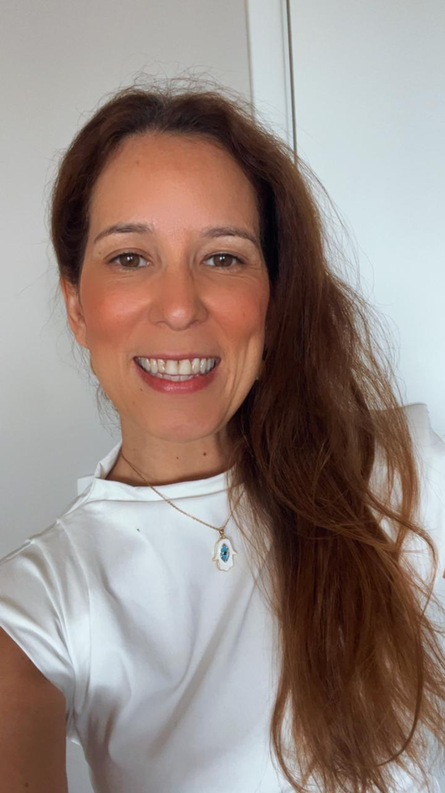
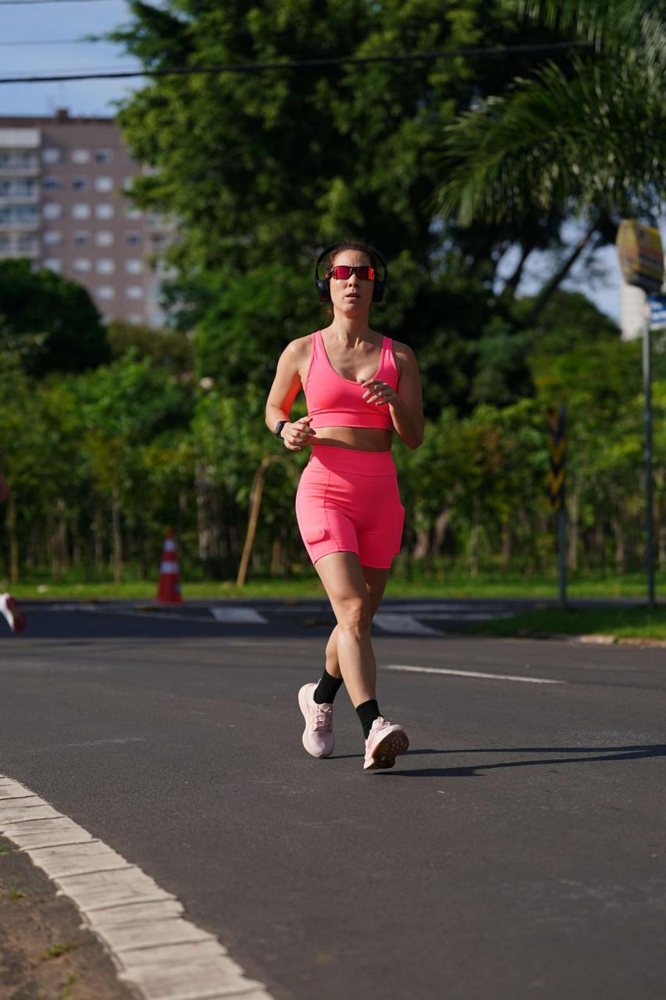
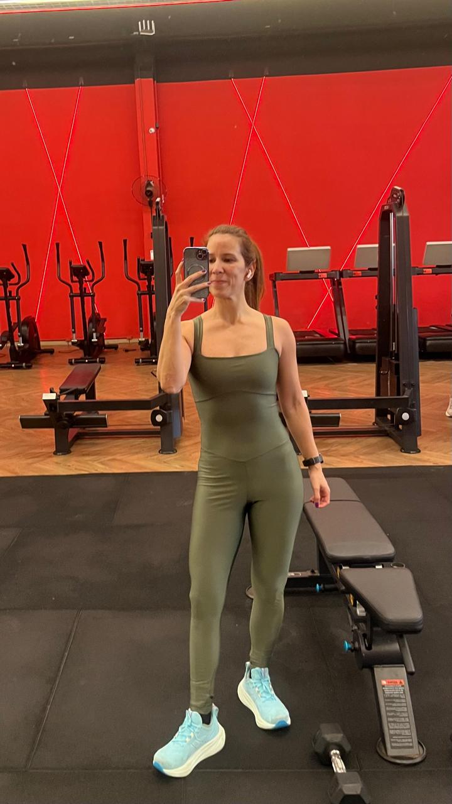
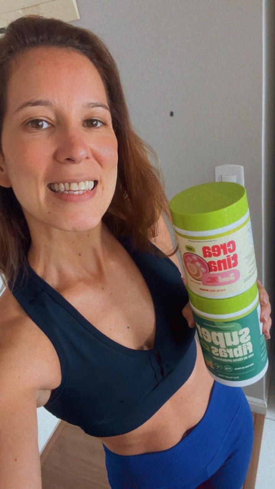
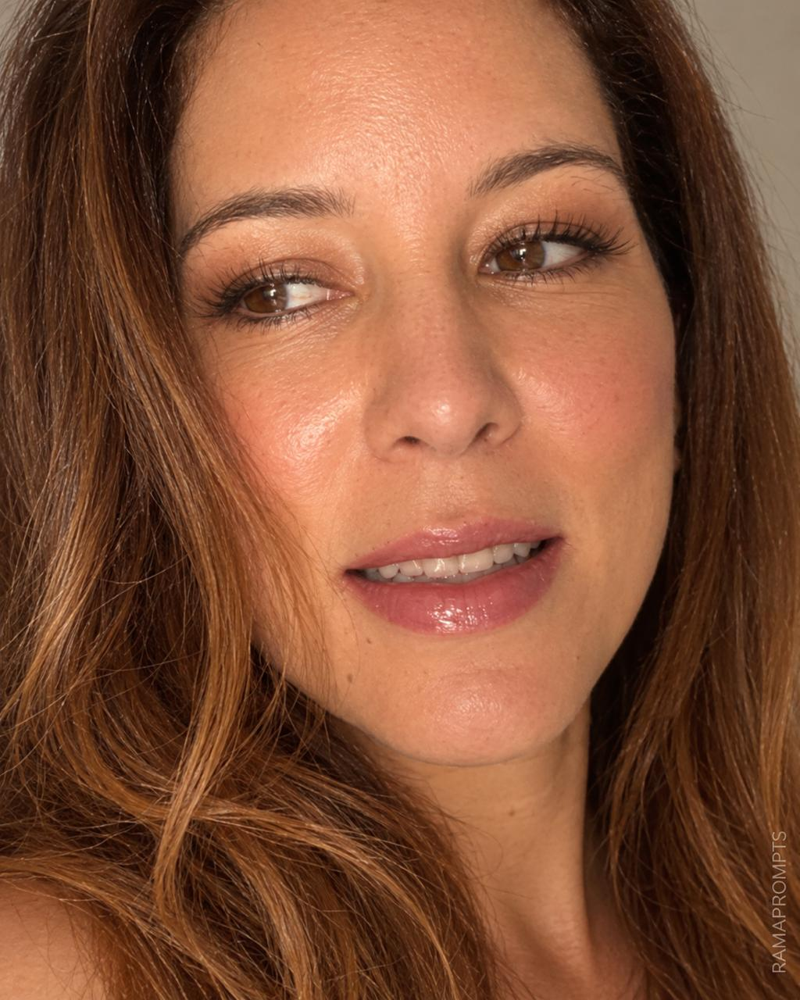

Rotina de treino
Fitness · Conteúdo de rotina
Histórias reais. Conteúdos que conectam pessoas e marcas.
Lifestyle · Fitness · Beleza
Fitness · Conteúdo de rotina
Moda fitness · Unboxing
Apresentação · Lifestyle




Disponível para conversar sobre projetos UGC, demonstrações, unboxing e vídeos para redes sociais.
vika_novais@hotmail.com
Instagram @vivinovais · TikTok @viviannovais2